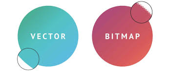

Een bitmap-afbeelding bestaat uit duizenden kleine puntjes die we pixels noemen. Elk van die puntjes heeft een eigen kleur. Als je een foto of afbeelding op je scherm ziet, zijn het die pixels die samen het hele plaatje vormen. Wanneer je een bitmap-afbeelding vergroot, worden de pixels ook groter, waardoor de afbeelding er blokkerig en minder scherp uitziet.
Ideaal voor: Foto's en afbeeldingen met veel details.
Nadeel: Verliest kwaliteit als je het groter maakt, en de bestandsgrootte kan groot zijn.
Een vectorafbeelding wordt gemaakt met wiskundige formules die lijnen, vormen en kleuren beschrijven. In plaats van individuele pixels te gebruiken, werkt een vector met vormen die je onbeperkt kunt vergroten of verkleinen zonder dat de kwaliteit achteruitgaat. Daarom blijven vectorafbeeldingen altijd scherp, ongeacht de grootte.
Ideal voor: Logo's, illustraties, en ontwerpen die je vaak wilt vergroten of verkleinen.
Nadeel: Minder geschikt voor realistische foto's, zoals landschap afbeeldingen.
Je moet dus eigenlijk van te voren weten wat voor afbeelding je gaat gebruiken en op basis daarvan kiezen tussen een Bitmap- of vectorafbeelding.
